Infections in the Immunocompromised Host
Infections in the Immunocompromised Host
Febrile Neutropenia
Russell Lewis
Associate Professor, Infectious Diseases
Department of Molecular Medicine
MEP 2491 Infectious Diseases
13 March 2023

Objectives
- Review common immunosuppression risk factors for infection in patients undergoing treatment for cancer/hematological malignancies
- Anticipate most likely infections based on the the types of immunosuppression
- Define appropriate prophylaxis and treatment strategies for immunocompromised hosts
Microbial colonization
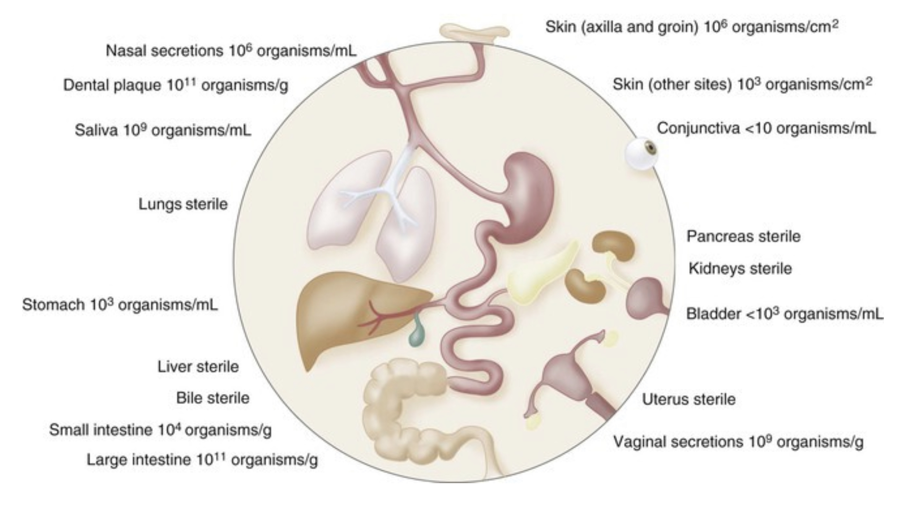
Healthy hosts
- Protection against most pathogens through complex and redundant network of:
Protective surfaces
Cells (e.g., granulocytes, macrophages, NK cells)
Soluble factors (antibody, complement)
Resident microbiota (competition for binding sites and available nutrients as well as shaping the immune system)
Classification of the immunosuppressed host
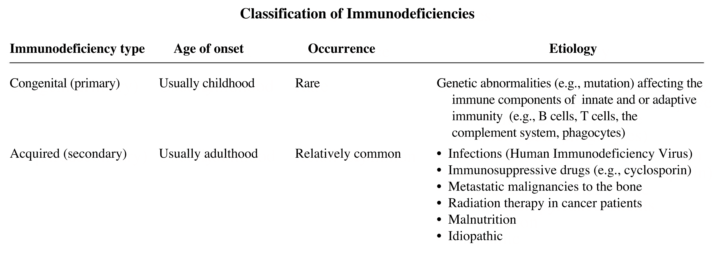
Deficiencies in host defences
- Although certain organisms can infect patients with specific immune defects, it is not always predictable
- Basic patterns are recognizable, but the types and severity of complications is often unpredictable
Single, isolated deficiencies are the exception rather than the rule
Multiple defence mechanisms are often affected
e.g., chemotherapy → mucosal barrier injury + neutropenia
e.g., stem cell transplantation → chemotherapy → immunosuppressive therapy + delayed reconstitution of adaptive immunity + graft versus host disease (GVHD)
Innate immune system
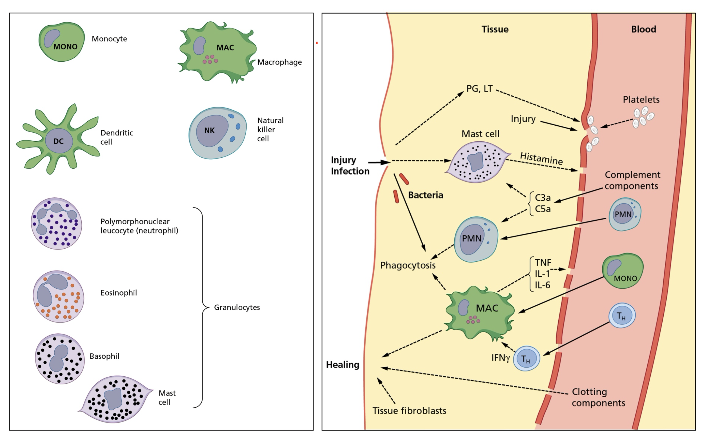
Playfair and Bancroft. Infection and Immunity 4th Edition
Effector mechanisms and targets of the innate immune system
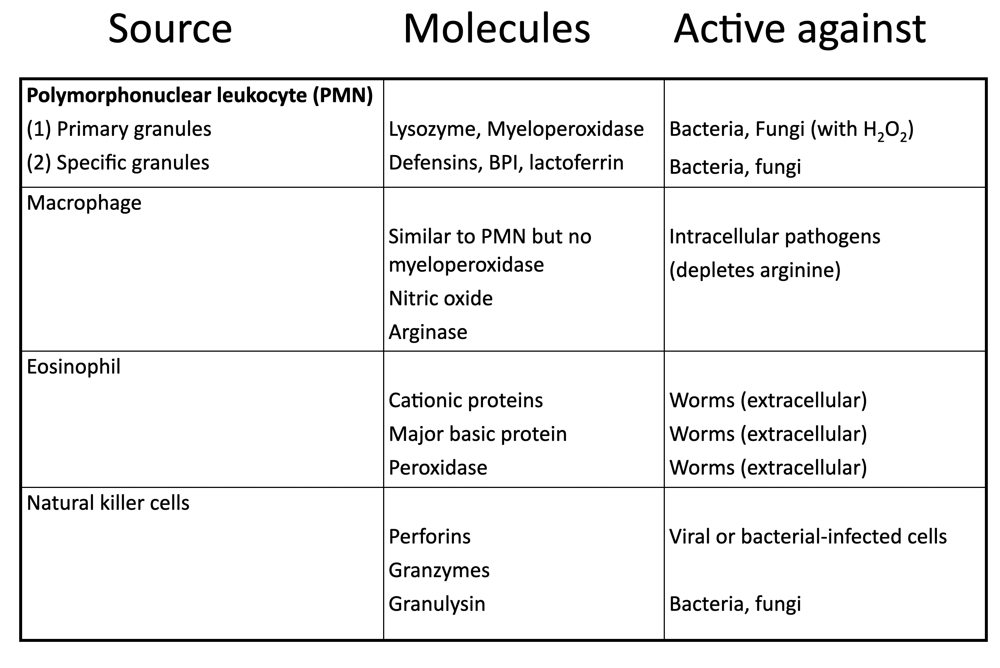
Chemotherapy effects on granulocytes
- Virtually all antineoplastic drugs in the treatment of malignant diseases have a deleterious effect on the proliferation of normal hematopoietic progenitor cells
- Effects are enhanced by radiation (depending on dose, rate, site)
Obliteration of the mitotic pool
Depletion of the marrow reserve
- Antineoplastic drugs, glucocorticoids and irradiation also interfere with the function of non-proliferating granulocytes, resulting in
Decreased chemotaxis
Diminished phagocytic capacity
Defective intracellular killing
- Glucocorticoids seem to enhance granulocytopoiesis and mobilize the marginal and marrow pool reserve, but
- reduce accumulation of granuloytes at site of infection (reduced adherence)
- diminished chemotactic activity
- decreased phagocytosis and intracellular killing
Granulocytopenia
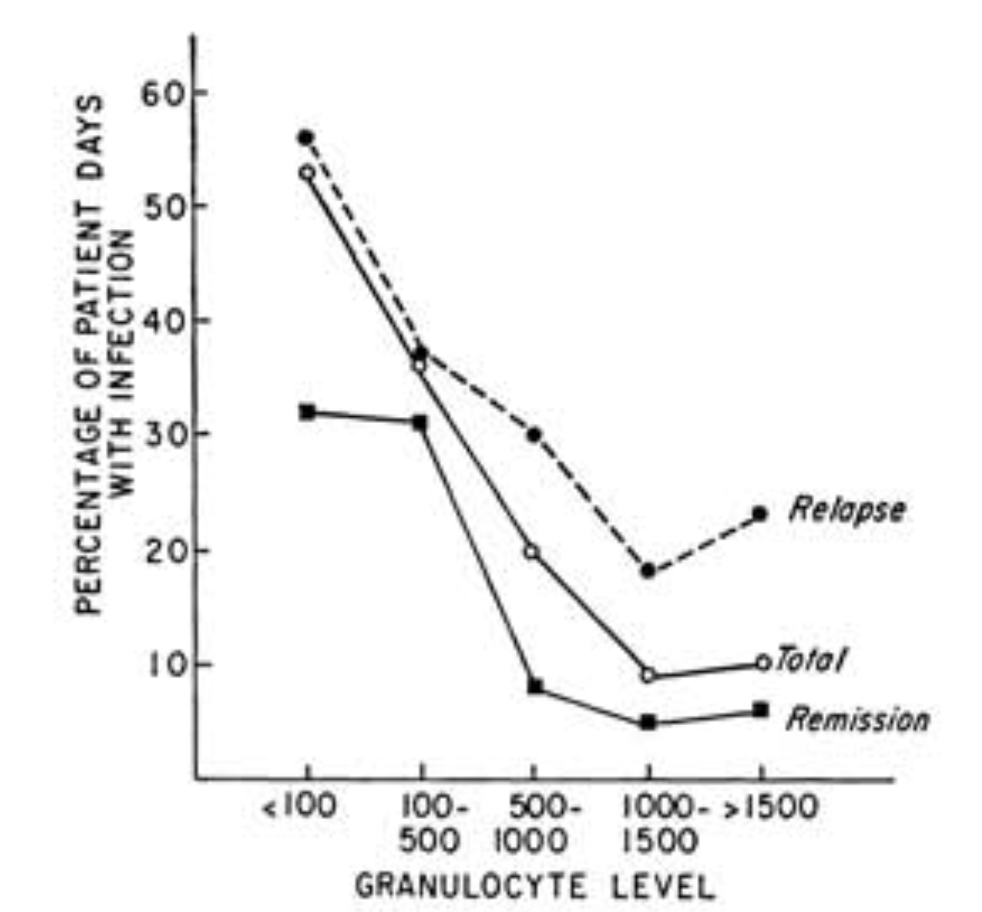
(Bodey et al., 1966)
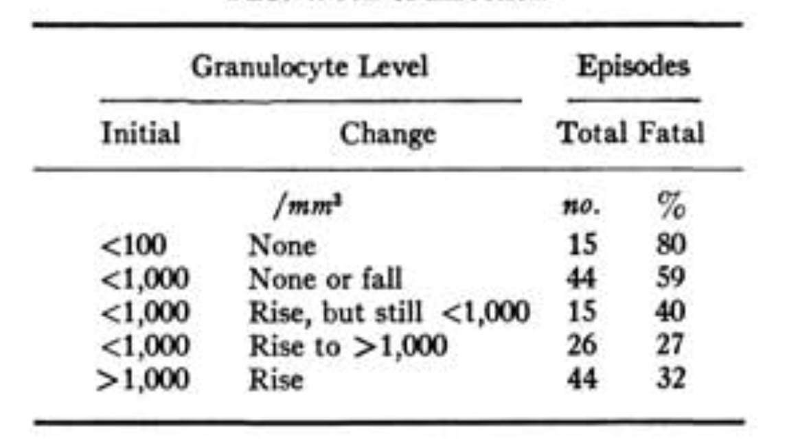
(Bodey et al., 1966)
Typical antimicrobial flora
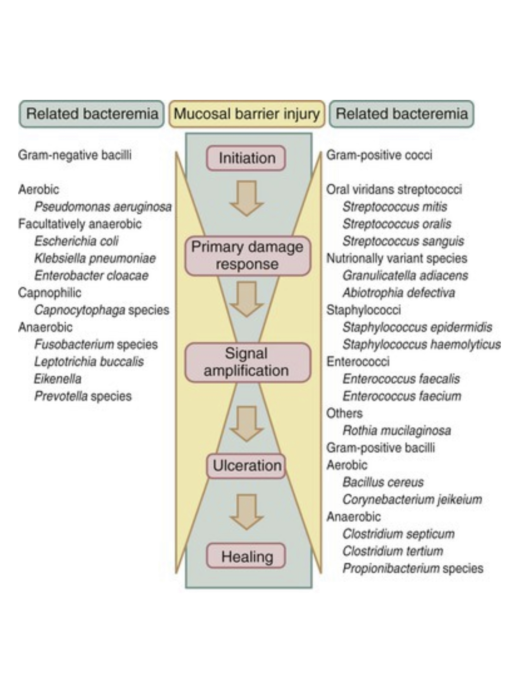
Infection model

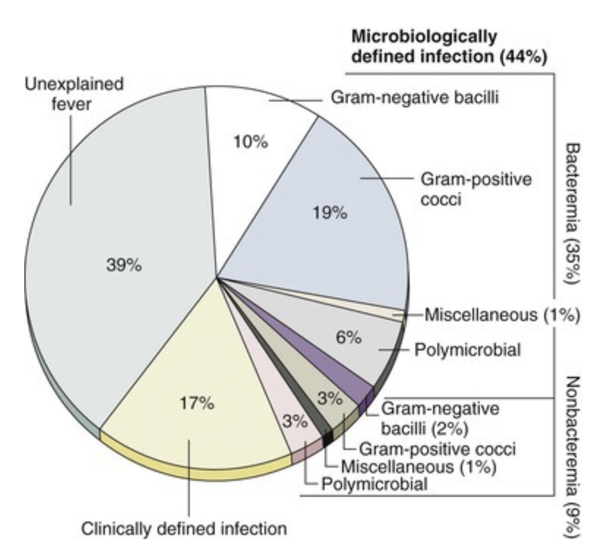
Microbiologically defined bacterial infections
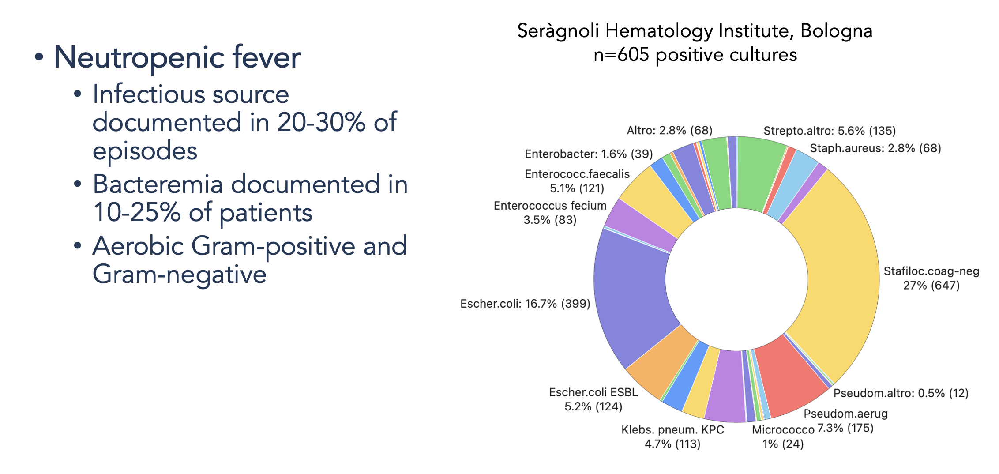
Immunodeficiencies and assocaited pathogens #1
Types of infection versus phases of neutropenia
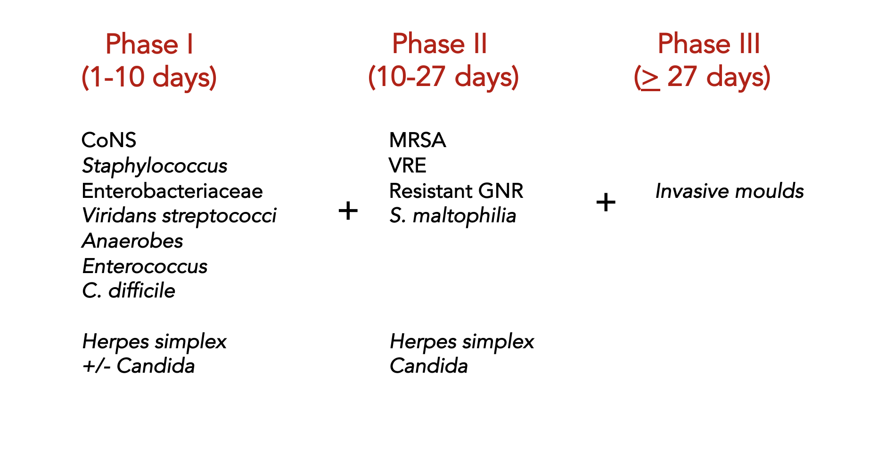
Prolonged neutropenia is a risk for invasive mold disease
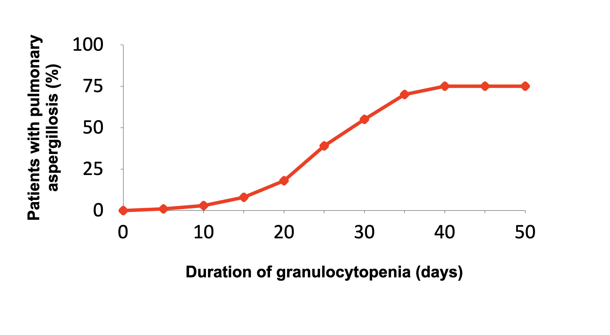